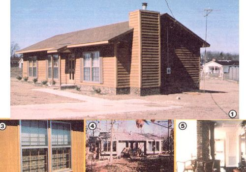
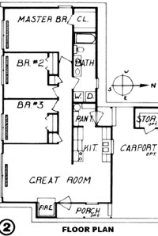
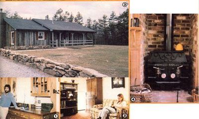

A new-from-the ground-up sun-heated dwelling could be yours... for as little as $29,000.
It's not too often that we here at MOTHER get a chance to compliment our federal government. So, when such an opportunity does arise, you can bet that we'll play it fair and square and let folks know where some of their tax dollars are being put to good use.
Now since this article deals with passive solar housing, you might expect that our kudos will be directed toward an energy -related branch of our republic's management. But, unusual as it may seem, in this case the credit has to go to the Farmers Home Administration, a division of the United States Department of Agriculture.
The FmHA is, you see, the "credit" arm of the USDA . . . it provides low-interest housing loans-to qualified people-for the construction of some 110,000 homes and apartments annually in rural locales. (Such areas, for eligibility purposes, are defined as either open country or towns with populations of less than 20,000.)
As a decentralized agency with 1,884 county offices throughout the nation, the FmHA is able to relate-at a grassroots 'level-to people who need to borrow affordable money . . . not only for shelter, but also to provide new employment, start businesses, or help purchase or operate farms. However, far from being yet another big government "giveaway" plan, the Farmers Home program relies in almost totally on insured loans. . . which are made and serviced by federal per sonnel, but use private capital obtained through the sale of notes. The 100% mortgage funds are available-at interest rates as low as one percent-to families with annual adjusted incomes of no more than $15,600 . . . and the difference between the borrower's and lender's premium is the "tab" that comes out of the federal till.
Making home ownership possible for those who can't afford high-interest housing, the FmHA people believe, will bolster the rural economy by encouraging responsible people to settle and work in such areas. Furthermore, the resulting construction can provide jobs for local builders, contractors, and tradespeople . . . work which might otherwise be difficult to find.
Of course, the FmHA isn't just a money-lending agency. It has, in fact, a comprehensive program that embraces everything from actual structure design to public relations . . . and is involved in bringing its services to the attention of businesspeople, planning groups, and local and state officials, as well as to possible recipients.
Until recently, Farmers Home Administration architects were concerned with structural soundness, practicality, ease of construction, and low cost, but not necessarily with energy conservation. Now, however, thanks to the efforts of some progressive folks at the state level, simple passive solar techniques are being incorporated into the agency's basic home designs, without spoiling the integrity of the structures . . . thus making sun-powered dwellings available at prices that have already proved to be equal to-or at most only 5% more than-those of sim ilar-sized conventionally-heated homes!
The man behind this "solarization" is Robert Andron, one of the FmHA architects assigned to the North Carolina area. Several years ago, as head of his own design firm, Bob worked up a number of plans in which solar energy played a major role. (He actually started using the sun in his layouts long before the notion was popular, and attributes some of his concepts-and a lot of his inspiration-to the pages of MOTHER!) So when he signed on with the federal team, Bob saw no reason to put a good idea to rest.
Mr. Andron knew, in short, that he could take a typical two- or three-bedroom suburban tract house, and-using low-tech solar hardware-turn the structure into a practical sun-heated dwelling.
THE "VOLKSWAGEN" OF SOLAR HOMES
The houses being financed under the FmHA "small home" program range in size from about 900 square feet of heated area to slightly over 1,000 . . . although such additions as carports, outside storage areas, and porches can add to the structures' overall size. To hold building costs down, great care is taken to keep the plans as conventional as possible, so as not to confuse contractors and suppliers with unfamiliar techniques or materials (which they might construe as "custom"-that is, expensive -work).
As a result, the bottom line for these homes-excluding such things as land and septic system, and depending upon locale-ranges from $29,000 to about $35,000 for a contractor-built package . . . a price which can be reduced sub stantially should the owner choose to construct his or her own home. (Fortunately, the FmHA program allows applicants a great deal of flexibility in the design, construction, and decoration of their abodes, and will even provide contacts and professional consultation for any program participants who wish to become intimately involved in the creation of their" castles".)
The structures themselves depend on three standard techniques to achieve at least partial energy independence:
[1] They're oriented ten degrees east of due south . . . to reduce insolation from the west on sultry summer afternoons while still taking full advantage of the light and heat available in the winter. Protective roof overhangs are also included in the designs, to prevent the rays of the high "dog days" sun from directly entering the homes.
[2] The insulation goes beyond the requirements of normal state and local codes, to hold both artificial and natural heat in the dwelling. The walls of the homes are equipped to an equivalent of R-19, and the ceilings protected to an R-30 level (the foundation walls or slabs also have rigid styrofoam lining). Equally important, all the south-facing windows are furnished with thermal curtains: framefitted roll-up quilts that prevent heat collected during the day from escaping out the windows at night.
[3] Each house is equipped with low, broad "Trombette" walls . . . which are actually brick thermal storage masses placed four inches behind large, doubleglazed windows or sliding glass doors on the south side of the structure. Unlike "conventional" Trombe walls (which, because of their size, are often both imposing and light-restrictive), the pintsize partitions do a more-than-adequate job of storing daytime warmth-and releasing it for up to six hours in the evening-while still allowing natural light to enter above the walls . . . and can even function as attractive planters or shelf units. By the same token, if for any reason a resident chooses to shut out daylight, the thermal shades can be partially drawn-to the level of the brick bulkheads' upper surfaces-without sacrificing the heat storage capabilities of the system.
Beyond those basics, care was taken to make the home designs both flexible and attractive. For example, the North Carolina plans provide for main entry from the north, south, or east (to allow construction in virtually any subdivision) . . . and material, trim, and color options are left completely to the builder or buyer. The backup thermal system is currently zone-controlled electric baseboard heat, but those homeowners with adequate supplies of timber can use woodstoves, too, if they wish. Extra summertime cooling is taken care of by a ceiling-mounted "whole house" attic fan that "sweeps" the structure from the floor upward.
ASK THE MAN OR WOMAN WHO OWNS ONE
Because the first FmHA passive solar houses were completed only last year, comprehensive performance figures are not yet available on a statewide level. But, if the experience of the owners is any indication of the success of the design, it looks as if the Farmers Home folks have a real winner. MOTHER's editors spoke with several one-year residents of the solar dwellings and heard nothing but good from every one of them.
As an example, Al Marek-a cabinetmaker in Milton, North Carolina-and his family didn't use even two cords of wood to heat their home during this past cold season, and two other families in the city of Wilson enjoy noticeably lower utility bills than do their neighbors in allelectric conventional houses. In fact, calculations based on the original plans indicate that a full two-thirds of the structures' energy needs can be provided by the sun . . . and some North Carolina owners report even greater savings.
PLANS ARE AVAILABLE
Folks who are interested in the Farmers Home Administration's loan program should get in touch with their FmHA county supervisor for more information. (He or she will usually be located in the federal office at the county seat . . . the address and telephone number can be found in your Yellow Pages under "Government Offices-U.S." among the listings for "Agriculture, Department of". If you can't find a representative in your area, try the agency's state office in the capital city.)
Even people who aren't eligible for the program, and yet are curious about the houses themselves, can obtain-for $5.00-plans for the latest (FmHA-2) passive solar home. Good news should be shared, and the Farmers Home Administration is more than willing to do just that.
|
 |
 |
 |